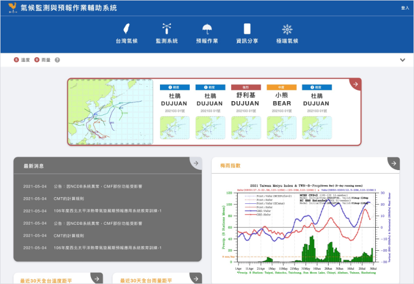
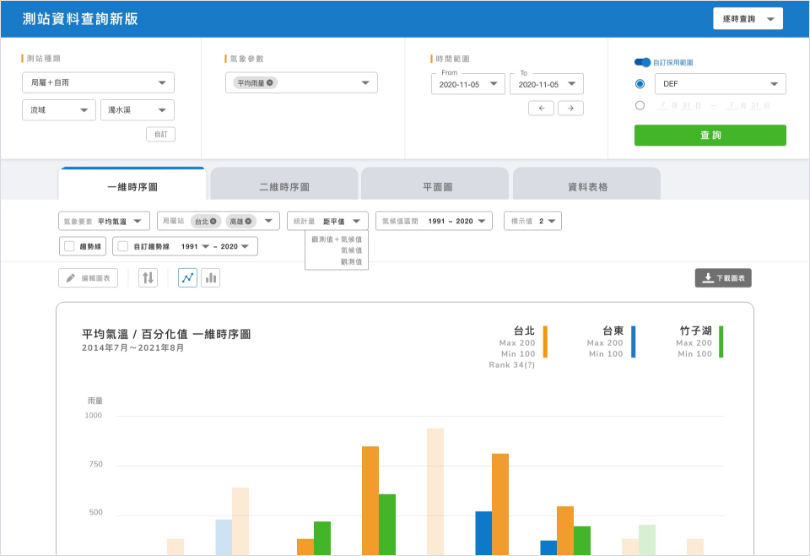

Background
Established about fifteen years ago, the Climate Monitoring
and Forecasting system (the CMF for short) is a critical
entrance site in the Climate Weather Bureau (the CWB),
providing multiple types of visualized climate data for
forecasters to produce meteorological products.
Recently, the forecaster has suffered from the typical
problems the informative application usually confronts: they
found difficulties using it because of their unorganized
information structure. Hundreds of system links with
one-third were abandoned, occupied the CMF, and caused an
unfriendly user experience. In addition to the chaotic
layout arrangement, the CMF can't release to the public due
to the out-of-date visual design should be a concern, too.
Review the three tasks requirements.
1. Redesign CMF for both college students and forecasters to
operate (1 month)
In addition to improving the usability, the CWB also has a
long-term plan to open part of the systems for college
students, so our goal is to redesign the CMF into a
well-organized and user-friendly entrance website.
2. Integrate the most-used systems for forecasters to search
data smoothly (1.5 months)
Forecasters complained that the high use-frequency systems
locate in different sections, which leads to inconvenience
while operating, so our second task is to integrate
commonly-used systems into a multi-function system.
3. Create a historical climate data site for the public for
educational purposes (1 month)
The CWB wants to build an informative application that
provides long-term climate data for the public since people
can only reach for the raw historical data from the official
website instead of the visualized data.
Consider stakeholders' needs to analyze the current situation
for formulating strategies.
For any redesign project, the most crucial thing is to take
care of all stakeholders, so I studied and summarized the pain
points and potential problems they currently encounter.
1. Client (the CWB): redesign the products systematically
CWB prefers a systematic redesign plan which can maintain
consistency in every product in the future, rather than just
figuring out the current layout problems.
2. Agent (IISI): promote our products widely
IISI wants all products to have a specific and recognizable
visual design because the department plans to develop and
release our owned product to the market.
3. Current user (CWB Meteorologist): search and collect data
faster
Integrating those products and achieving smooth using
experiences is crucial. After the primary user interview, I
found out the forecaster used those systems in a cumbersome
way: they opened many web pages and searched, clicked, and
switched in several interfaces, which took them more than ten
steps to figure out a weekly climate report.
4. Engineers (Front-end developer): build a user interface
easier.
Developers spent a great time struggling to adjust for
suitable layouts. The biggest problem is that the developers
have long lacked a style guide to follow, so even though most
systems have similar structures, they feel difficult to reuse
the components because the styles vary across systems.
5. Future users (public): understand the climate information
easily.
Without specialized meteorological knowledge, the public
cannot interpret proper nouns and descriptions, so our
direction for this product should be simplicity and
interaction.
Define goals and challenges

Design an informative dashboard in the CMF for all
decision-makers to consume
Goal:
Create a dashboard to convey at-a-glance
insights and quick paths for forecasters to make
decisions
Challenge:
Although a dashboard can give crucial
information to decision-makers, the key
performance indicators (KPIs) vary for different
purposes. What kind of dashboard can be proved
effective and geared towards most users?
More

Integrate the regularly-used systems for forecasters
to deal with daily tasks
Goal:
Integrate five systems in the Taiwan Climate
section, which is the most-used part of the CMF,
into a more functional and efficient system.
Challenge:
How to balance both the user and developer sides
by dealing with more than fifty different
formats and data sources?
More
Create a historical climate data site for the public
for educational purposes.
Goal:
Storytelling should become a primary focus in
this project because displaying all data is
inappropriate. And it turns to a question: how
can we use storytelling to put data into context
and simultaneously achieve informative and
understandable experiences?
Challenge:
Although a dashboard can give crucial
information to decision-makers, the key
performance indicators (KPIs) vary for different
purposes. What kind of dashboard can be proved
effective and geared towards most users?
More